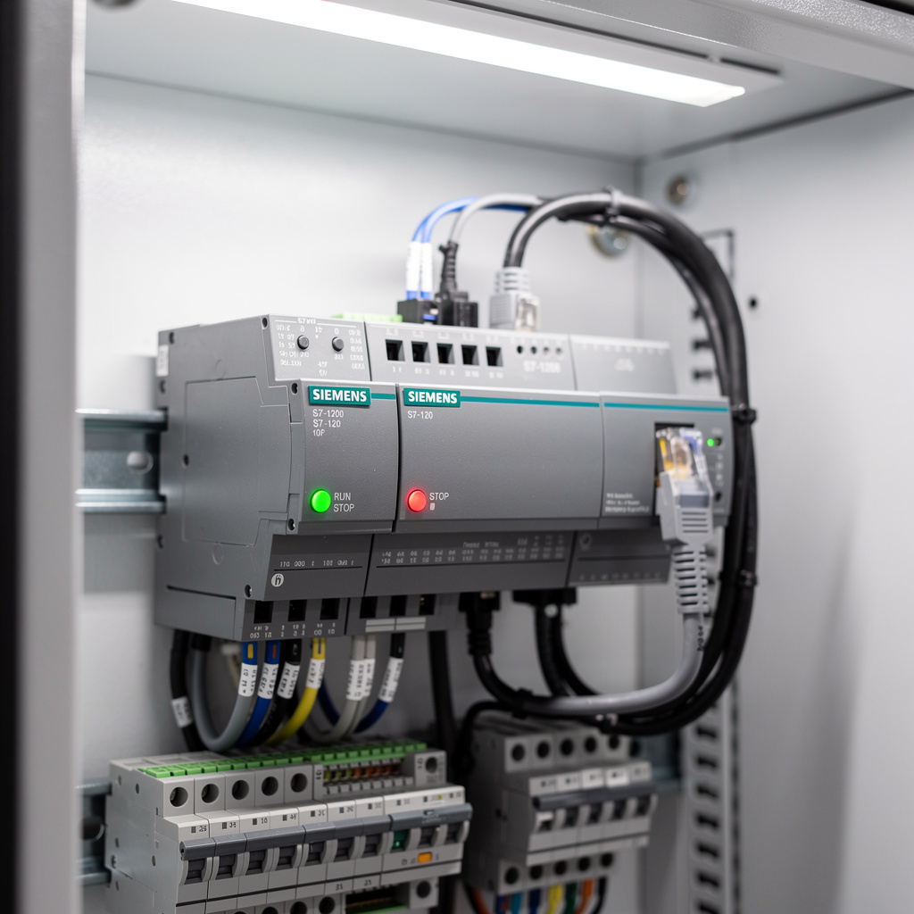

Technicien senior en
maintenance industrielle.
10+ ans sur équipements automatisés et mécaniques complexes : presses injection, lignes de production agroalimentaire (PET/canettes), bancs de test automobile, utilités industrielles. Électrotechnique, automatisme Siemens S7 / TIA Portal, mécanique, hydraulique, pneumatique. Diagnostic structuré, analyse RCA, amélioration continue.
Compétences clés
Mécanique
Diagnostic et réparation de systèmes de transmission, hydrauliques et pneumatiques complexes. Interventions curatives et préventives sur presses, lignes de production et utilités.
Électrique
Habilitation basse tension, câblage industriel, dépannage de variateurs de fréquence, diagnostic sur schémas, mesures électriques terrain.
Automatisme PLC
Programmation et diagnostic sur automates Siemens S7, développement HMI, supervision de process, optimisation de cycles et temporisations.
Habilitations techniques
| ID | Désignation | Organisme | Statut |
|---|---|---|---|
| CERT-H2023 | Habilitation Électrique BR/BC | AFNOR | VALIDÉ · 2026 |
| CACES-R489 | Chariots de manutention — Cat. 3 | CARSAT | VALIDÉ · 2028 |
| SST-2024 | Sauveteur Secouriste du Travail | INRS | RECYCLAGE |
Dernières interventions

Panne S7-1200 — Batterie RTC + perte recettes
CPU STOP, HMI 'PLC Not Ready'. Batterie RTC CR1025 à 2,1 V. Perte DB10 recettes après coupure. Programme plante sur DB vide. Remplacement pile, restauration Micro-SD, RUN rétabli.

Panne I/O — Assemblage connecteurs Tanger
Perte communication esclave station 3. Câble I/O sectionné dans chemin de câble → CC 24 V → bobine électrovanne 12 Ω → fusion voie Q3 ET200SP. Remplacement câble PUR, bobine, module DO, récupération Profinet.